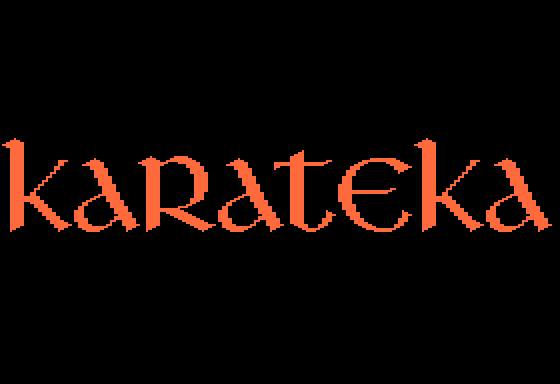
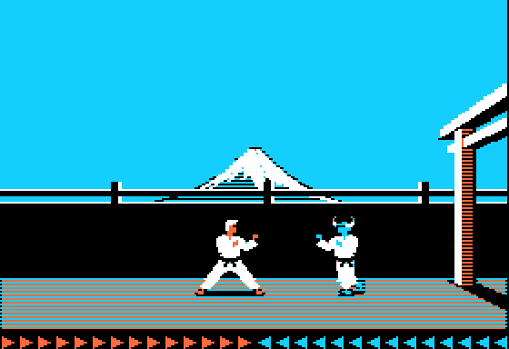

<meta charset="utf-8">
<meta name="viewport" content="width=device-width, initial-scale=1">
<title>Karateka</title>
<link rel="preconnect" href="https://fonts.googleapis.com">
<link rel="stylesheet" href="https://fonts.googleapis.com/css2?family=Lato:wght@400;700;900&family=IBM+Plex+Mono:wght@400;500&display=swap">
<style>
:root{
  --bg:#23262d; --paper:#e9e7e1; --surface:#ffffff; --surface-2:#f1efea; --line:#d5d3cc; --line-soft:#e0ded8;
  --ink:#2f3136; --ink-soft:#55585f; --ink-mute:#80838a;
  --link:#1f5fa8; --link-hover:#154480; --accent:#1f5fa8;
  --amber:#c25a00; --cyan:#1f5fa8; --coral:#d04a3a; --green:#2a8a4a; --violet:#4a5bd6; --hl:#fff0c2;
  --chip:#2f3136; --chip-ink:#ffffff;
  --c64blue:#40318d; --c64grey:#686868;
  --fd:'Lato',system-ui,sans-serif; --fb:'Lato',system-ui,sans-serif; --fm:'IBM Plex Mono',ui-monospace,Menlo,monospace;
  --col:1080px; --gx:68px; --fs:17px; --lh:1.6; --hw:900; --h1:46px; --h2:26px; --sy:48px; --pp:26px; --r:10px;
  --plate-shadow:0 1px 2px rgba(0,0,0,.05),0 4px 14px rgba(0,0,0,.05);
}
*{box-sizing:border-box}
html{background:var(--bg);min-height:100%}
body{background:var(--paper);color:var(--ink);font-family:var(--fb);font-size:var(--fs);line-height:var(--lh);max-width:var(--col);margin:0 auto;min-height:100vh;padding:0 0 4rem}
h1,h2,h3{font-weight:var(--hw);letter-spacing:-.01em;text-wrap:balance;color:var(--ink);margin:0}
.wrap{padding:0 var(--gx)}
.hero{padding:48px var(--gx) 8px;text-align:left}
.eyebrow{font-family:var(--fm);font-size:12px;letter-spacing:.08em;text-transform:uppercase;color:var(--ink-mute);margin:0 0 10px}
.hero h1{font-size:var(--h1);line-height:1.15;letter-spacing:-.02em;margin:0 0 14px}
.hero .sub{margin:0 0 .6em;color:var(--ink-soft)}
section{padding:var(--sy) 0 24px}
section:last-of-type{border-bottom:none}
.fig{font-family:var(--fm);font-size:12px;letter-spacing:.08em;text-transform:uppercase;color:var(--ink-mute);margin:0 0 10px}
h2.t{font-size:var(--h2);margin-bottom:12px}
.lede{color:var(--ink-soft);margin:0 0 30px}
.plate{background:var(--surface);border:1px solid var(--line);border-radius:var(--r);padding:var(--pp);box-shadow:var(--plate-shadow)}
.cap{font-size:14px;color:var(--ink-mute);margin-top:14px;line-height:1.55}
.cap b{color:var(--ink);font-weight:700}
code{font-family:var(--fm);font-size:.82em;background:var(--chip);color:var(--chip-ink);border-radius:4px;padding:2px 6px;white-space:nowrap}

.ka-pair{display:grid;grid-template-columns:1fr 1fr;gap:18px;align-items:start}
.ka-pair img,.ka-screen{width:100%;display:block;border-radius:4px;image-rendering:pixelated;background:#000}
.ka-bar{display:flex;flex-wrap:wrap;gap:8px;align-items:center;margin:0 0 12px}
.ka-bar button{font:inherit;font-size:13px;padding:5px 11px;border:1px solid var(--line);background:var(--surface-2);color:var(--ink);border-radius:6px;cursor:pointer}
.ka-bar button.on,.ka-bar button[aria-pressed="true"]{background:var(--ink);color:#fff;border-color:var(--ink)}
.ka-scrub{display:flex;gap:10px;align-items:center;margin:10px 0 0;font-family:var(--fm);font-size:12px;color:var(--ink-mute)}
.ka-scrub input{flex:1;min-width:0;accent-color:var(--accent)}
.ka-bar label{font-size:13px;color:var(--ink-soft);display:flex;gap:6px;align-items:center}
.ka-bar label[hidden]{display:none}
.ka-bar select{font:inherit;font-size:13px;padding:5px 8px;border:1px solid var(--line);border-radius:6px;background:var(--surface)}
.ka-stat{font-family:var(--fm);font-size:12px;color:var(--ink-mute);margin-left:auto}
.ka-tbl{border-collapse:collapse;font-size:14px;width:100%}
.ka-tbl th,.ka-tbl td{border-bottom:1px solid var(--line-soft);padding:6px 8px;text-align:left;vertical-align:top}
.ka-tbl th{font-weight:700;color:var(--ink-soft);font-size:13px}
.ka-tbl td.n{font-family:var(--fm);text-align:right;white-space:nowrap}
.ka-scroll{overflow-x:auto;margin:0 0 16px}
.ka-note{font-size:14px;color:var(--ink-soft)}
.ka-err{color:var(--coral);font-size:14px}
.ka-sound{background:#111;border-radius:6px;padding:8px 10px;color:#ddd}
.ka-bytes{font-family:var(--fm);font-size:12px;line-height:1.9;color:#bbb;margin-top:10px;word-break:break-word}
.ka-bytes span{padding:1px 3px;border-radius:3px;margin-right:4px;white-space:nowrap}
.ka-bytes .hd{color:#9fd3ff}
.ka-bytes .cmd{color:#c9b3ff}
.ka-bytes .rest{color:#777}
.ka-bytes .on{background:#e8a33d;color:#111}
.ka-brain{display:grid;grid-template-columns:minmax(0,1fr) minmax(0,1fr);gap:22px;align-items:start}
.ka-grid{display:grid;grid-template-columns:repeat(16,1fr);gap:2px;font-family:var(--fm);font-size:10px}
.ka-grid div{aspect-ratio:1;display:flex;align-items:center;justify-content:center;border-radius:2px;color:#fff;cursor:default}
.ka-k{background:#c0392b}.ka-p{background:#d97f1a}.ka-s{background:#2e6fb7}.ka-h{background:#b9b6ae}.ka-w{background:#6c6a65}
.ka-key{display:inline-block;width:11px;height:11px;border-radius:2px;vertical-align:-1px;margin-right:5px}
.ka-dist button{min-width:34px}
@media (max-width:760px){:root{--gx:16px;--pp:14px}.ka-pair,.ka-brain{grid-template-columns:1fr}.ka-stat{margin-left:0}}
</style>
<!-- tabs -->
<header class="hero">
  <p class="eyebrow">1984 · Brøderbund Software · Apple II</p>
  <h1>Karateka</h1>
  <p class="sub">A guard in Karateka chooses each move by holding one random byte against four small tables that every stage keeps just before its own entry point. The last of the four runs into that entry point, so whether a guard who holds back steps in at a given distance is decided by the bytes of a jump instruction.</p>
</header>
<main class="wrap">

<section id="game">
  <p class="fig">01 · The game</p>
  <h2 class="t">The game</h2>
  <p>The player is a karateka, a karate fighter, sent to rescue Princess Mariko from the warlord Akuma's fortress. The way in runs along a cliff path, through the palace hall, down into the dungeon and into Akuma's chamber. Guards come one at a time, each in new headgear and with more strength than the last, and Akuma sends his hawk at the hero in the palace and the dungeon.</p>
  <p>A fight is fought from a fighting stance: three keys punch high, middle and low, three more kick, and two step forward and back. The orange arrows at the bottom left are the hero's strength and the blue ones at the right his opponent's. Each blow that lands takes an arrow, and the last one kills. A hero who walks or runs into a fight dies of the first blow, and so does one who comes to Mariko in the stance.</p>
  <div class="plate">
    <div class="ka-pair">
      
      
    </div>
    <p class="cap">The title, and the first guard on the cliff. Apple2TS 3.7.0 as an enhanced Apple IIe, from Brøderbund's original disk (<code>reference/</code>).</p>
  </div>
</section>

<section id="demo" data-part="title">
  <p class="fig">02 · One frame, rebuilt from memory</p>
  <h2 class="t">The title and the demonstration fight, run from the listing</h2>
  <p class="lede">With no key pressed, the title shows the credits, the logo and the scrolling prologue, plays out a scene in Akuma's chamber and then a fight on the cliff that plays itself. Here the title's own code from the Source tab does all of that in the browser.</p>
  <div class="plate">
    <div class="ka-bar">
      <button type="button" id="dm-play">▶ Play</button>
      <button type="button" id="dm-step">Next frame</button>
      <button type="button" id="dm-reset">From the start</button>
      <button type="button" data-sound aria-pressed="true">🔊 Sound</button>
      <button type="button" data-crt aria-pressed="false" title="Draw the picture as a CRT monitor did: lit lines with a soft glow, on a slightly curved screen">📺 CRT screen</button>
      <span class="ka-stat" id="dm-stat">loading the listings</span>
    </div>
    <canvas id="dm-cv" class="ka-screen" width="560" height="384" aria-label="The title stage's screen, drawn from memory at each page flip"></canvas>
    <div class="ka-scrub"><input type="range" id="dm-scrub" min="1" max="571" value="1" step="1" aria-label="Flip of the round"><span id="dm-at">flip 1</span></div>
    <p class="cap">The title stage's code runs from its entry, <code data-part="">$BFFA</code>, on the kit's 6502 over the engine's listing with the title's laid over it, and stops each time the game flips the page shown; the page then shown is drawn by the site's Apple II library (<code>reference/demo.js</code>). The Monitor's delay routine, which the sounds call, is the one piece of the machine stood in for. The round, 571 flips from the credits to the credits again, is worked out once, and the slider moves through it. Play shows each flip at the machine's speed, with the speaker's clicks played through the site's model of the speaker. <b>At 18 flips from the credits to the demonstration fight and the prologue again, both hi-res pages hold the same 16,384 bytes as in Apple2TS, and the round's 16,141 clicks come at the same spacings between its flips</b>, run from the stage's entry (<code>test_demo.js</code>). The run here is an Apple II older than the IIe, which does not wait for the vertical blank before a flip, so the round takes 155.1 seconds here and 157.8 on a IIe. In the game the next round's fight differs, because the random numbers carry on; Play goes round the same one again.</p>
  </div>
  <p>Every frame is drawn on the hi-res page the player is not looking at, and then the two are swapped. The page being drawn is kept in <code>$07</code> (<code>$20</code> for page 1, <code>$40</code> for page 2), and <code>flip</code> (<code data-part="engine">$7609</code>) shows it. On a IIe or IIc the flip first waits for the vertical blank, after a look at the machine's ID byte (<code data-part="engine">$779A</code>); on an older Apple II it flips at once. There is no timer. A frame takes as long as its drawing takes, and a tune or a sound holds the frame up while it plays.</p>
  <div class="ka-scroll"><table class="ka-tbl">
    <tr><th>On the cliff, in Apple2TS</th><th>Frames</th><th>Video frames</th><th>Frames a second</th></tr>
    <tr><td>The hero standing still</td><td class="n">43</td><td class="n">300</td><td class="n">8.6</td></tr>
    <tr><td>The hero running, the scene scrolling</td><td class="n">11</td><td class="n">120</td><td class="n">5.5</td></tr>
  </table></div>
  <p>A fighter is drawn from three pictures: his legs, in 42 poses, his torso, in 38, and his head or headgear. Tables of columns and rows for each pose place them (<code data-part="engine">$6000</code>-<code data-part="engine">$62FF</code>), and <code>draw_figure</code> (<code data-part="engine">$6811</code>) draws them. A fighter facing left is the same pictures drawn mirrored, each byte turned round through a table of 256 reversed bytes (<code data-part="engine">$0980</code>). The guards are told apart by their headgear: types 0 and 6 are pictures the engine keeps, and types 1 to 5 are each stage's own, at <code data-part="">$BE00</code>. Akuma is drawn by a routine of the last stage's own (<a href="source-akuma.html#BC00"><code data-part="">$BC00</code></a>).</p>
</section>

<section id="brain" data-part="engine">
  <p class="fig">03 · The guards' brain</p>
  <h2 class="t">How a guard chooses his next move</h2>
  <p class="lede">Once both fighters are in the stance and 11 columns apart or closer, a guard's move in each frame comes from the distance between them and the next number of the game's random sequence. Choose the opponent and the distance: each square is one of the 256 values the random number can hold as the guard thinks, coloured by what he does.</p>
  <div class="plate">
    <div class="ka-bar">
      <label>Opponent <select id="br-opp"></select></label>
      <span class="ka-dist" id="br-dist"></span>
      <label id="br-colw" hidden><input type="checkbox" id="br-col"> Akuma at columns <code>$20</code>-<code>$26</code></label>
    </div>
    <div class="ka-brain">
      <div class="ka-grid" id="br-grid" aria-label="The 256 random numbers, each coloured by the guard's move"></div>
      <div>
        <table class="ka-tbl" id="br-tally"></table>
        <p class="ka-note" id="br-why"></p>
      </div>
    </div>
    <p class="cap">Each square runs a port of the brain, <code>opp_brain</code> (<code>$6B00</code>), from that random number, with the guard ready in the stance (legs and torso in pose 6, his legs' step at its third position) and the hero in the stance (<code>reference/brain.js</code>). The thresholds and the chances are read from each stage's listing. <b>The port gives the same move, height, stick and next random number as the game's own routine run on the kit's 6502 in 673,440 cases</b>: every random number at every distance from 0 to 13 in every stage, and 100,000 random states of every cell of zero page the routine reads (<code>test_brain.js</code>).</p>
  </div>
  <p>The random numbers come from <code>random</code> (<code>$6C95</code>), which multiplies the last one by 17 and adds <code>$A1</code>, keeping the low byte. That sequence runs through all 256 values before it repeats, so over a fight the squares above are equally likely. The first number is held against three thresholds for the distance, read from three small tables in the stage: at or above the first, the guard throws no blow; between the first and the second, he tries a kick; between the second and the third, a punch; below the third, a step forward.</p>
  <p>A move tried is not yet made. It must pass the guard's chance for it, set by his headgear (<code>$D7</code> a kick, <code>$D8</code> a punch, <code>$D9</code> a step), against the next random number, and a blow's height comes from the number after that: high, middle or low a third of the time each. Akuma never aims low (<code>$6C71</code>). A move that fails its chance falls through to the case of no blow, in which the guard steps in or holds his place, by a fourth table.</p>
  <div class="ka-scroll"><table class="ka-tbl" id="br-tables"></table></div>
  <p>For distances 7 to 11 the fourth table is read at <code data-part="">$BFF9</code>-<code data-part="">$BFFD</code>, and four of those five bytes are not chances at all. They are the stage's entry, <code>JMP $B700</code> (<code>4C 00 B7</code>), and the stage's number, the first of its check bytes. So at distance 9 a guard who holds back never steps in, because the chance is the low byte of <code data-part="">$B700</code>, and at 10 he steps in 183 times in 256, because it is the high byte (<a href="discoveries.html#entry-bytes">Discoveries</a>).</p>
  <p>The other cases are simpler. A guard in the stance kicks a standing hero within 8 columns, if his kick chance allows, and steps towards one further off, and towards a hero in the stance 12 columns away or more. A guard standing takes the stance when the hero does or comes within 13 columns, and bows back when the hero bows.</p>
</section>

<section id="music" data-part="engine">
  <p class="fig">04 · Music</p>
  <h2 class="t">Music: two voices beating on one speaker</h2>
  <p class="lede">The Apple II's speaker clicks each time the program touches <code>$C030</code>. Karateka's tune player, <code>play_tune</code> (<code>$0D00</code>), clicks it for two voices at the same pitch, the second voice's count one shorter, so that the two drift against each other and the note shimmers. These are the sixteen tunes the game stores.</p>
  <div class="plate">
    <div class="ka-sound" id="mu"><span class="ka-err" id="mu-msg">Loading the listings…</span></div>
    <div class="ka-sound ka-bytes" id="mu-bytes"></div>
    <p class="cap">Each button runs the stage's own entry for that tune from the listing (a JMP among those at <code data-part="">$1000</code>) through the player on the kit's 6502, and plays its clicks through the site's model of the speaker (<code>site/lib/apple2-speaker.js</code>); the drawing shows each note's pitch and, along the foot, every click. Below it are the tune's bytes in memory, with the note playing lit. <b>Run from each stage's snapshot in Apple2TS, all sixteen tunes click at the same cycles, click for click</b> (<code>test_tunes.js</code>). Several stages carry the same tune; each copy plays alike, within three cycles a click.</p>
  </div>
  <p>A tune is two header bytes and then notes of three. The first header byte is the tempo, which the player writes into its own code (<code>$0D5E</code>); the second is the page the second voice reads, where <code>$C0</code> clicks the speaker and any other page is silent. Each note is a length and a pitch, given as a coarse and a fine count, and a coarse count with its top bit set is a rest. Three bytes are commands:</p>
  <div class="ka-scroll"><table class="ka-tbl">
    <tr><th>Byte</th><th>What the player does</th></tr>
    <tr><td><code>$FE</code></td><td>two NOPs at <code>$0D79</code>: the second voice runs free, and the two voices drift apart and back</td></tr>
    <tr><td><code>$FD</code> n</td><td><code>LDY #n</code> at <code>$0D79</code>: each click of the first voice sets the second's count to n, so the two stay a fixed distance apart</td></tr>
    <tr><td><code>$FF</code></td><td>the end of the tune</td></tr>
  </table></div>
  <p>Every tune starts with <code>$FE</code> or <code>$FD</code>, so each one sets the two voices afresh.</p>
  <p>Each stage keeps its own tunes behind JMPs at <code data-part="">$1000</code>, at the same place in every stage, so that the engine and the stage can ask for the tune for a guard beaten (<code data-part="">$1006</code>) or the hero's death (<code data-part="">$1003</code>) whichever stage is loaded; the engine itself keeps two of the last stage's (<code>$0FB0</code>, <code>$0FE4</code>). The closing tune has a tempo of <code>$40</code>, against 4 to 8 for every other, which stretches 64 short notes over 19 seconds.</p>
  <p>Before each note the player reads the keyboard. A special key such as CONTROL-S is obeyed at once, and any other key is thrown away, so a key pressed during a tune never reaches the fight.</p>
</section>

<section id="fighting" data-part="engine">
  <p class="fig">05 · Fighting</p>
  <h2 class="t">A blow on a standing hero kills him outright</h2>
  <p class="lede">Arrows count the blows a fighter can take, but only in the stance. A hero caught standing, running or bowing dies of the first blow, whatever his arrows (<code>$712A</code>); a guard caught the same way only reels.</p>
  <p>Whether a blow lands is decided by <code>hit_test</code> (<code>$7366</code>) from the distance between the fighters and the class of the target's pose (<code>pose_class</code>, <code>$70C6</code>, 26 classes for the 42 poses of the legs). A kick always lands within the target's reach plus one column, and the reach is 6 or 7 columns (<code>$7300</code>). Punches land by tables, at the reach (<code>$7348</code>, <code>$7352</code>) and at the reach plus two (<code>$7334</code>, <code>$733E</code>, <code>$735C</code>). A quick punch, thrown while stepping, lands only at exactly its own reach (<code>$745B</code>). Closer than the reach the two collide, and a hero who is moving is pushed back two columns.</p>
  <p>Each blow that lands takes an arrow (<code>$0BC1</code>, <code>$0BD2</code>), and arrows come back one at a time while a fighter is not hit (<code>$0BE3</code>). The stages share out the strength. The hero's most arrows and each opponent's always add up to 28, and each guard beaten moves one more from the hero's side to the next guard's, until the hero is down to a floor that each stage sets.</p>
  <div class="ka-scroll"><table class="ka-tbl">
    <tr><th>Stage</th><th>The hero's most arrows at the start</th><th>Each opponent's</th><th>The hero gives one up per guard while he has</th><th>Guards' headgear</th></tr>
    <tr><td>The cliff (<a href="source-cliff.html#B700"><code data-part="">$B700</code></a>)</td><td class="n">14</td><td class="n">14</td><td>10 or more</td><td>0 to 5</td></tr>
    <tr><td>The palace (<a href="source-palace.html#B700"><code data-part="">$B700</code></a>)</td><td class="n">12</td><td class="n">16</td><td>9 or more</td><td>1 to 5</td></tr>
    <tr><td>The dungeon (<a href="source-dungeon.html#B700"><code data-part="">$B700</code></a>)</td><td class="n">10</td><td class="n">18</td><td>any number</td><td>3 to 6, then the hawk</td></tr>
    <tr><td>Akuma's chamber (<a href="source-akuma.html#B700"><code data-part="">$B700</code></a>)</td><td class="n">8</td><td class="n">20</td><td></td><td>Akuma</td></tr>
  </table></div>
  <p class="ka-note">The dungeon's hawk is its last opponent, with 5 arrows that never come back, and the hero has 23 for that fight: 28 again.</p>
</section>

<section id="controls" data-part="engine">
  <p class="fig">06 · Controls</p>
  <h2 class="t">Controls: the low kick is on X</h2>
  <p class="lede">The manual gives Z for the low kick. The game reads X, and Z is the low punch.</p>
  <div class="ka-scroll"><table class="ka-tbl">
    <tr><th>Key</th><th>Standing</th><th>In the stance</th><th>Code</th></tr>
    <tr><td>SPACE</td><td>take the stance</td><td>stand up</td><td><code>$6E78</code></td></tr>
    <tr><td>RIGHT arrow</td><td>run, and keep running</td><td>one step forward</td><td><code>$6E69</code></td></tr>
    <tr><td>LEFT arrow</td><td>stop running</td><td>one step back</td><td><code>$6E69</code></td></tr>
    <tr><td>Q, A, Z</td><td></td><td>punch high, middle, low</td><td><code>$6EB9</code></td></tr>
    <tr><td>W, S, X</td><td></td><td>kick high, middle, low</td><td><code>$6EE0</code></td></tr>
    <tr><td>B</td><td>bow</td><td></td><td><code>$6F04</code></td></tr>
  </table></div>
  <p>A blow pressed while another is under way waits, and is sent again each frame until the fighter can take it (<code>$46</code>, <code>$47</code>). With the joystick, chosen with J (K goes back to the keys), holding the stick up keeps the hero standing, and letting it go puts him in the stance, where the buttons kick and punch at the height the stick points to (<code>player_input</code>, <code>$6E00</code>). Up stands him up again only when no guard or Akuma is within 15 columns and the hawk is not close.</p>
  <p>The special keys work at any time, even in the middle of a tune (<code>special_keys</code>, <code>$7697</code>). ESC freezes the game until a key is pressed. CONTROL-S turns the music off, then the sound, then both back on. CONTROL-B swaps the joystick's buttons, CONTROL-E its axes, CONTROL-X reverses left and right and CONTROL-Y up and down, and CONTROL-N puts all four back. CONTROL-R goes back to the title. Each answers with a beep.</p>
</section>

<section id="sound" data-part="engine">
  <p class="fig">07 · Sound</p>
  <h2 class="t">Sound: one recording, played at seven speeds</h2>
  <p class="lede">Seven short effects are clicks spaced by the Monitor ROM's delay routine. The eighth sound is a recording of 2,048 one-bit samples (<code>$0E00</code>), played back slower or faster for a guard falling dead, a doorway kicked open, the hero falling to Akuma, Mariko's kick, Akuma's cry and the hawk.</p>
  <div class="plate">
    <div class="ka-sound" id="snd"><span class="ka-err">Loading the listings…</span></div>
    <p class="cap">Each button runs the engine's own code for the sound from the listing on the kit's 6502 and plays its clicks through the site's model of the speaker. The Monitor's delay routine, <code>WAIT</code>, which the ROM holds and the listing does not, is stood in for by its timing, (26 + 27A + 5A²) / 2 cycles. <b>In Apple2TS the same calls click at the same cycles, click for click, for all ten</b> (<code>test_sound.js</code>).</p>
  </div>
  <div class="ka-scroll"><table class="ka-tbl">
    <tr><th>Sound</th><th>Code</th><th>Played when</th></tr>
    <tr><td>The hero struck</td><td><code>$0C40</code></td><td>a blow lands on the hero: 38 clicks, falling</td></tr>
    <tr><td>The opponent struck</td><td><code>$0C43</code></td><td>a blow lands on the opponent, or a doorway is kicked: 28 clicks</td></tr>
    <tr><td>A quick punch lands</td><td><code>$0C46</code></td><td>17 clicks</td></tr>
    <tr><td>A blow thrown</td><td><code>$0C49</code></td><td>the swing, 10 clicks</td></tr>
    <tr><td>A control key</td><td><code>$0C4C</code></td><td>the beep after a special key</td></tr>
    <tr><td>Steps</td><td><code>$0C4F</code>, <code>$0C52</code></td><td>footsteps in a scene, and the hero's run</td></tr>
    <tr><td>The recording</td><td><code>$0DC0</code></td><td>at speed 30 for a guard falling dead or a doorway kicked open (<code>$729F</code>, <code>$740C</code>), 40 for the hero falling to Akuma (<code>$724D</code>), 18 for Mariko's kick (<a href="source-akuma.html#BB3D"><code data-part="">$BB3D</code></a>), 7 for Akuma's cry before he sends the hawk, and 6, 5 and 4 for the hawk struck, flying off and pecking (<a href="source-palace.html#B5DA"><code data-part="">$B5DA</code></a>)</td></tr>
  </table></div>
  <p><code>play_sample</code> (<code>$0DC0</code>) waits <code>$BA</code> turns of a loop between samples and clicks the speaker only where the sample changes, so the speed sets the pitch and the length together: the recording lasts 0.35 seconds at speed 30 and 0.45 at 40.</p>
  <p>All the sounds are made at the end of the frame that asked for them (<code>end_frame</code>, <code>$7628</code>), and CONTROL-S silences them. The last stage turns the music and the sound back on whatever the player chose, so the ending is always heard (<a href="source-akuma.html#B700"><code data-part="">$B700</code></a>).</p>
</section>

<section id="stages" data-part="engine">
  <p class="fig">08 · The stages and the disk</p>
  <h2 class="t">Five stages take turns in the same 12 KB</h2>
  <p class="lede">The engine stays in memory from the boot to the end. The title and the four stages each load over the one before, into <code data-part="">$1000</code>-<code data-part="">$1FFF</code> and <code data-part="">$A000</code>-<code data-part="">$BFFF</code>.</p>
  <p>The disk has no DOS and no files. After the boot sector, everything is read by the game's own loader (<code>load</code>, <code>$0338</code>), twelve 256-byte sectors to a track, with four marks of its own on each track (<code>track_marks</code>, <code>$5610</code>). Stage n starts on track 4n + 7, the castle picture shown before the cliff on track 4. The loader's later parts live in the strips of hi-res page 2 that the screen never shows, and are read from the disk again before every load.</p>
  <div class="ka-scroll"><table class="ka-tbl">
    <tr><th>Stage</th><th><code>$D0</code></th><th>First track</th><th>Loaded when</th></tr>
    <tr><td>The title and demo</td><td class="n">0</td><td class="n">7</td><td>at the boot, after THE END, and on CONTROL-R</td></tr>
    <tr><td>The cliff</td><td class="n">1</td><td class="n">11</td><td>a key at the title, after the castle picture</td></tr>
    <tr><td>The palace</td><td class="n">2</td><td class="n">15</td><td>the hero walks off the cliff's second screen</td></tr>
    <tr><td>The dungeon</td><td class="n">3</td><td class="n">19</td><td>the hero passes under the palace's portcullis</td></tr>
    <tr><td>Akuma's chamber</td><td class="n">4</td><td class="n">23</td><td>the dungeon's hawk is beaten</td></tr>
  </table></div>
  <p>A stage ends with three check bytes: its number, the number EOR <code>$3B</code> and the number EOR <code>$49</code>. The engine reads the stage again until they check, then enters it by the JMP just before them, at <code data-part="">$BFFA</code> (<code>load_stage</code>, <code>$020C</code>).</p>
  <p>What passes from one stage to the next is only what is in the engine's memory: zero page, with the control chosen, the sound switches and the hero's record.</p>
  <p>Pressing RESET does not get out of the game. The game keeps a copy of the ROM in the language card with its reset vector pointed at the game's own handler, which clears memory and boots the disk again (<code>reset_handler</code>, <code>$0309</code>). Every stage, with its rooms, is drawn by its own code on the <a href="levels.html">Maps / levels</a> tab.</p>
</section>

</main>
<footer style="margin:16px 0 0;padding:22px var(--gx) 0;border-top:1px solid #e0ded8;font-family:'IBM Plex Mono',ui-monospace,Menlo,monospace;font-size:12px;color:#80838a"><a href="https://github.com/gamesexplained/gamesexplained" style="color:#1f5fa8;text-decoration:none">GitHub</a> · <a href="https://discord.gg/3V9GWyRDWV" style="color:#1f5fa8;text-decoration:none">Discord</a><br>© Games Explained contributors. Write-ups, facts and symbol maps are available under <a href="https://creativecommons.org/licenses/by-sa/4.0/" style="color:#1f5fa8;text-decoration:none">CC BY-SA 4.0</a>; code under <a href="https://opensource.org/licenses/MIT" style="color:#1f5fa8;text-decoration:none">MIT</a></footer>
<script src="../../lib/cpu6502.js"></script>
<script src="../../lib/apple2.js"></script>
<script src="../../lib/apple2-speaker.js"></script>
<script src="../../lib/crt.js"></script>
<script src="../../lib/sound.js"></script>
<script src="reference/demo.js"></script>
<script src="reference/tunes.js"></script>
<script src="reference/sound.js"></script>
<script src="reference/brain.js"></script>
<script>
(async function () {
  const $ = id => document.getElementById(id);
  const hex = (v, n = 2) => '$' + v.toString(16).toUpperCase().padStart(n, '0');
  const missing = [['C64Cpu', 'cpu6502.js'], ['Apple2', 'apple2.js'], ['Apple2Speaker', 'apple2-speaker.js'],
    ['KarDemo', 'reference/demo.js'], ['KarTunes', 'reference/tunes.js'], ['KarSound', 'reference/sound.js'],
    ['KarBrain', 'reference/brain.js']].filter(([g]) => !globalThis[g]).map(([, f]) => f);
  const say = msg => { $('dm-stat').textContent = msg; $('mu').innerHTML = $('snd').innerHTML = '<span class="ka-err">' + msg + '</span>'; };
  if (missing.length) say('This widget needs the built site (missing: ' + missing.join(', ') + ').');

  let Ls = null;
  if (!missing.length) {
    try {
      Ls = {};
      await Promise.all(KarTunes.PARTS.map(async p => { Ls[p] = await Apple2.load(`parts/${p}/listing.json`); }));
    } catch (e) { Ls = null; say('The listings did not load: ' + e.message); }
  }

  // --- 03: the brain, from the stages' own tables (it needs only the listings) ---------------------
  const OPPS = [];
  const STAGE_CHANCES = { cliff: [0xBB75, 0xBB7B, 0xBB81, 0, 5], palace: [0xBC44, 0xBC49, 0xBC4E, 1, 5], dungeon: [0xB496, 0xB49A, 0xB49E, 3, 6] };
  const STAGE_NAMES = { title: 'The demo', cliff: 'The cliff', palace: 'The palace', dungeon: 'The dungeon', akuma: 'Akuma’s chamber' };
  const D0 = { title: 0, cliff: 1, palace: 2, dungeon: 3, akuma: 4 };
  if (Ls) {
    for (const [part, [k, p, s, lo, hi]] of Object.entries(STAGE_CHANCES)) for (let h = lo; h <= hi; h++) {
      const r = Ls[part].ram;
      OPPS.push({ name: `${STAGE_NAMES[part]}: the guard in headgear ${h}`, part, type: 0, ch: [r[k + h], r[p + h], r[s + h]] });
    }
    OPPS.push({ name: 'Akuma', part: 'akuma', type: 1, ch: [0xFF, 0xFF, 0xFF] });
    OPPS.push({ name: 'The demo’s guard, at the title', part: 'title', type: 0, ch: [0xFF, 0xFF, 0xFF] });
    const sel = $('br-opp');
    OPPS.forEach((o, i) => { const op = document.createElement('option'); op.value = i; op.textContent = o.name; sel.appendChild(op); });
    let dist = 9;
    const dists = $('br-dist');
    for (let d = 7; d <= 11; d++) {
      const b = document.createElement('button'); b.type = 'button'; b.textContent = d;
      b.title = `${d} columns apart`; b.onclick = () => { dist = d; brain(); }; dists.appendChild(b);
    }
    const KINDS = { k: 'a kick', p: 'a punch', s: 'a step forward', h: 'holds his place' };
    const HEIGHT = { 0xFF: 'high', 0: 'middle', 1: 'low' };
    function brain() {
      const o = OPPS[+sel.value], m = Ls[o.part].ram;
      [...dists.children].forEach(b => b.classList.toggle('on', +b.textContent === dist));
      $('br-colw').hidden = o.type !== 1;
      const count = { k: [0, 0, 0], p: [0, 0, 0], s: 0, h: 0 }, grid = $('br-grid');
      grid.innerHTML = '';
      for (let r = 0; r < 256; r++) {
        const z = new Uint8Array(256);
        z[0x20] = 6; z[0x21] = 6; z[0x25] = 3; z[0x26] = 3; z[0x5D] = 1; z[0x60] = 6; z[0x44] = 1;
        z[0x33] = dist; z[0x4D] = o.type; z[0x22] = o.type === 1 && $('br-col').checked ? 0x22 : 0x10;
        z[0xD0] = D0[o.part]; z[0xD7] = o.ch[0]; z[0xD8] = o.ch[1]; z[0xD9] = o.ch[2]; z[0x48] = r;
        const got = KarBrain.think(z, a => m[a], 0);
        const kind = got.cmd === 0xC5 ? 'k' : got.cmd === 0xD7 ? 'p' : z[0x29] === 1 ? 's' : 'h';
        const c = document.createElement('div');
        c.className = 'ka-' + kind;
        if (kind === 'k' || kind === 'p') { const i = [0xFF, 0, 1].indexOf(z[0x2A]); count[kind][i]++; c.textContent = 'HML'[i]; }
        else count[kind]++;
        c.title = `random ${hex(r)}: ${KINDS[kind]}${kind === 'k' || kind === 'p' ? ', ' + HEIGHT[z[0x2A]] : ''}`;
        grid.appendChild(c);
      }
      const pct = n => (n / 256 * 100).toFixed(1) + ' %';
      const row = (key, name, n, h) => `<tr><td><span class="ka-key ka-${key}"></span>${name}</td><td class="n">${n}</td><td class="n">${pct(n)}</td><td>${h || ''}</td></tr>`;
      const hs = a => a.map((n, i) => n ? `${['high', 'middle', 'low'][i]} ${n}` : '').filter(Boolean).join(', ');
      const sum = a => a.reduce((x, y) => x + y, 0);
      $('br-tally').innerHTML = '<tr><th>Move</th><th>of 256</th><th></th><th>Heights</th></tr>' +
        row('k', 'Kick', sum(count.k), hs(count.k)) + row('p', 'Punch', sum(count.p), hs(count.p)) +
        row('s', 'Step forward', count.s) + row('h', 'Hold his place', count.h);
      const x = dist, T = a => hex(m[a + x]);
      $('br-why').innerHTML = `Thresholds for ${dist} columns in ${STAGE_NAMES[o.part].toLowerCase()}: no blow at or above <code>${T(0xBFE1)}</code>, ` +
        `a kick from <code>${T(0xBFE6)}</code>, a punch from <code>${T(0xBFEB)}</code>, a step below it. Chances: kick <code>${hex(o.ch[0])}</code>, ` +
        `punch <code>${hex(o.ch[1])}</code>, step <code>${hex(o.ch[2])}</code>. With no blow, a step in below <code>${T(0xBFF2)}</code>.`;
    }
    sel.onchange = brain; $('br-col').onchange = brain;
    brain();
    // the four tables, stage by stage
    const tb = $('br-tables');
    let html = '<tr><th>Stage</th><th>Table</th>' + [7, 8, 9, 10, 11].map(d => `<th>${d}</th>`).join('') + '</tr>';
    for (const part of ['cliff', 'palace', 'dungeon', 'akuma']) {
      const r = Ls[part].ram;
      [['no blow at or above', 0xBFE1], ['a kick from', 0xBFE6], ['a punch from', 0xBFEB], ['with no blow, a step in below', 0xBFF2]].forEach(([n, b], i) => {
        html += `<tr><td>${i ? '' : STAGE_NAMES[part]}</td><td>${n} <code data-part="">${hex(b + 7, 4)}</code></td>` + [7, 8, 9, 10, 11].map(d => `<td class="n">${hex(r[b + d])}</td>`).join('') + '</tr>';
      });
    }
    tb.innerHTML = html;
  }

  // --- 02: the title and the demo ------------------------------------------------------------------
  const cv = $('dm-cv'), ctx = cv.getContext('2d');
  ctx.fillStyle = '#000'; ctx.fillRect(0, 0, cv.width, cv.height);
  if (globalThis.CRT) CRT.attach(cv, { button: document.querySelector('#demo [data-crt]'), pixel: 2, on: true });   // the CRT screen switch (site/lib/crt.js)
  if (Ls) {
    // The round is worked out once, a few flips at a time while the page stays free: for each flip,
    // the page shown and its 8 KB, the cycle it came at and the clicks of the speaker since the flip
    // before. Playing, scrubbing and stepping then show what was kept. Flip N + 1 shows the credits
    // again, as flip 1 did, so Play goes back to flip 1 when it is due.
    const N = KarDemo.ROUND, CLOCK = KarDemo.CLOCK, T = [], screen = new Uint8Array(0x10000);
    const scrub = $('dm-scrub');
    scrub.max = N;
    let run = null, working = false;
    function work() {
      if (T.length > N) { working = false; return; }
      working = true;
      run = run || KarDemo.start({ engine: Ls.engine, title: Ls.title });
      const end = performance.now() + 20;
      do {
        const f = KarDemo.next(run), at = f.page === 1 ? 0x2000 : 0x4000;
        T.push({ page: f.page, at: run.cpu.cycles, bytes: run.m.slice(at, at + 0x2000), clicks: run.speaker.splice(0) });
      } while (T.length <= N && performance.now() < end);
      if (k === 0) show(1); else label();
      setTimeout(work, 0);
    }

    let k = 0, playing = false, raf = 0, t0 = 0, c0 = 0, queued = 0;
    function label() {
      $('dm-at').textContent = `flip ${k} of ${N}` + (T.length < N ? `, ${T.length} worked out` : '');
      $('dm-stat').textContent = `page ${T[k - 1].page} · ${(T[k - 1].at / CLOCK).toFixed(1)} s of the machine's time`;
    }
    function show(j) {
      k = Math.max(1, Math.min(j, T.length, N));
      const F = T[k - 1];
      screen.set(F.bytes, F.page === 1 ? 0x2000 : 0x4000);
      Apple2.draw(cv, screen, null, { hires: true, page2: F.page === 2 }, 'hires');
      scrub.value = k;
      label();
    }

    // The sound: each flip's clicks played through the site's model of the speaker, timed from the
    // flip shown, so a tune that holds a frame up plays before the next flip appears
    let actx = null, soundOn = false;
    const sources = new Set();
    function sound(j, at) {             // flip j's clicks, the first at `at` (performance.now() ms)
      const c = T[j - 1] && T[j - 1].clicks;
      if (!soundOn || !actx || !c || !c.length) return;
      const data = Apple2Speaker.render({ clock: CLOCK, start: c[0], end: c[c.length - 1], speaker: c }, actx.sampleRate);
      const buf = actx.createBuffer(1, data.length, actx.sampleRate);
      buf.getChannelData(0).set(data);
      const src = actx.createBufferSource();
      src.buffer = buf; src.connect(actx.destination);
      const when = actx.currentTime + (at - performance.now()) / 1000;
      if (when >= actx.currentTime) src.start(when);
      else if (actx.currentTime - when < buf.duration) src.start(actx.currentTime, actx.currentTime - when);
      else return;
      sources.add(src); src.onended = () => sources.delete(src);
    }
    function hush() { for (const src of sources) { try { src.stop(); } catch (e) { /* not started */ } } sources.clear(); }
    if (globalThis.Sound) Sound.attach(document.querySelector('#demo [data-sound]'), on => {   // the sound switch (site/lib/sound.js)
      if (!on) { soundOn = false; hush(); return false; }
      try { actx = actx || new (window.AudioContext || window.webkitAudioContext)(); } catch (e) { return false; }
      if (actx.state === 'suspended') actx.resume();
      soundOn = true; queued = k;
      return true;
    });

    // Playing at the machine's own speed: flip j is shown at t0 + its cycles since c0, and the
    // clicks of the flip after it are queued a little ahead
    const due = j => t0 + (T[j - 1].at - c0) / CLOCK * 1000;
    const clickAt = c => t0 + (c - c0) / CLOCK * 1000;
    function rebase(now) { t0 = now; c0 = T[k - 1].at; hush(); queued = k; }
    function tick(now) {
      if (!playing) return;
      if (k < T.length && now - due(k + 1) > 250) rebase(now);     // the tab was hidden: go on from here
      while (k < Math.min(T.length, N) && now >= due(k + 1)) show(k + 1);
      if (k === N && T.length > N && now >= due(N + 1)) { show(1); rebase(now); }   // the credits again
      else if (k === T.length) rebase(now);                         // waiting for the flips to be worked out
      while (queued < T.length && due(queued) < now + 300) {
        queued++;
        if (T[queued - 1].clicks.length) sound(queued, clickAt(T[queued - 1].clicks[0]));
      }
      raf = requestAnimationFrame(tick);
    }
    function play(on) {
      playing = on; $('dm-play').textContent = playing ? '❚❚ Pause' : '▶ Play';
      $('dm-play').classList.toggle('on', playing);
      cancelAnimationFrame(raf); hush();
      if (playing) { rebase(performance.now()); raf = requestAnimationFrame(tick); }
    }
    const begin = () => { if (!working && T.length <= N) { if (!T.length) $('dm-stat').textContent = 'working out the round'; work(); } };
    $('dm-play').onclick = () => { begin(); play(!playing); };
    $('dm-step').onclick = () => {
      begin();
      if (playing || k >= Math.min(T.length, N)) return;
      show(k + 1);
      sound(k, performance.now());
    };
    $('dm-reset').onclick = () => { begin(); show(1); if (playing) rebase(performance.now()); };
    scrub.oninput = () => { begin(); show(+scrub.value); if (playing) rebase(performance.now()); };
    // the round is worked out once the section comes near the screen
    if ('IntersectionObserver' in window) {
      const io = new IntersectionObserver(es => { if (es.some(e => e.isIntersecting)) { io.disconnect(); begin(); } }, { rootMargin: '600px' });
      io.observe($('demo'));
    } else begin();
  }

  // --- 04: the tunes, each made by the game's player as the page needs it ---------------------------
  if (Ls) {
    $('mu').innerHTML = '';
    const empty = { clock: KarTunes.CLOCK, start: 0, end: 1, speaker: [] };
    const logs = [];
    const tunes = KarTunes.TUNES.map(t => ({ name: t.name, log: empty, voices: 2 }));
    let shownTune = 0, lit = -1;
    function bytes(i, t) {
      const log = logs[i], box = $('mu-bytes');
      if (!log) { box.textContent = ''; return; }
      const m = Ls.engine.ram.slice(), st = Ls[KarTunes.TUNES[i].part];
      for (let a = 0; a < 0x10000; a++) if (st.has[a]) m[a] = st.ram[a];
      let at = -1;
      if (t != null) for (const [c, a] of log.notes) if (c / KarTunes.CLOCK <= t) at = a;
      if (i === shownTune && at === lit && box.childElementCount) return;
      shownTune = i; lit = at;
      const out = [`<span class="hd">${hex(log.tune, 4)}: ${hex(m[log.tune])} ${hex(m[log.tune + 1])}</span>`];
      let a = log.tune + 2;
      for (let n = 0; n < 400; n++) {
        const b = m[a];
        if (b === 0xFF) { out.push('<span class="cmd">FF</span>'); break; }
        if (b === 0xFE) { out.push('<span class="cmd">FE</span>'); a++; continue; }
        if (b === 0xFD) { out.push(`<span class="cmd">FD ${hex(m[a + 1]).slice(1)}</span>`); a += 2; continue; }
        const cls = (a === at ? 'on ' : '') + (m[a + 1] & 0x80 ? 'rest' : '');
        out.push(`<span class="${cls}">${[0, 1, 2].map(k => hex(m[a + k]).slice(1)).join(' ')}</span>`);
        a += 3;
      }
      box.innerHTML = out.join('');
    }
    const player = Apple2Speaker.mount($('mu'), { tunes, voices: 2, onTime: (t, i) => bytes(i, t) });
    // make the logs one at a time, so the page answers while they are made
    let k = 0;
    const more = () => {
      if (k >= tunes.length) return;
      logs[k] = KarTunes.log(Ls, k);
      player.set(k, logs[k]);
      if (k === 0) bytes(0, null);
      k++; setTimeout(more, 0);
    };
    setTimeout(more, 50);
  }

  // --- 07: the sound effects ---------------------------------------------------------------------
  if (Ls) {
    $('snd').innerHTML = '';
    const tunes = KarSound.EFFECTS.map((e, k) => ({ name: e.name, log: KarSound.log(Ls.engine, k) }));
    Apple2Speaker.mount($('snd'), { tunes });
  }
})();
</script>
